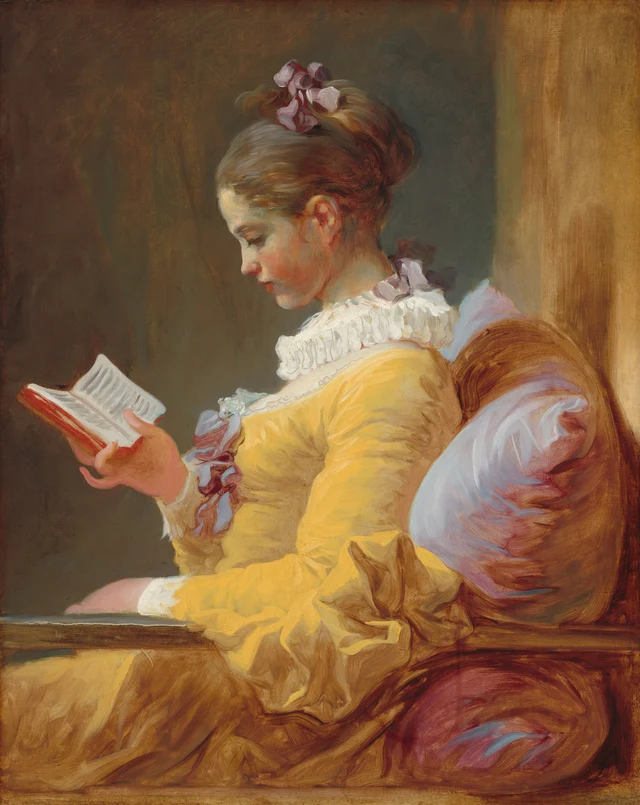
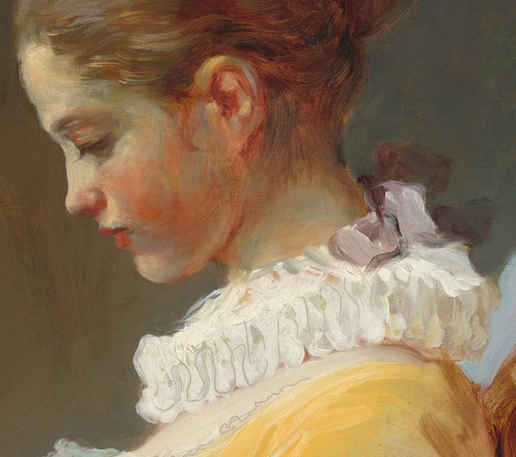

Begin with the little book in her hand. A narrow strip of red binding emerges against the darkness. The open pages turn upward, carrying gray strokes that look like printed lines. We almost follow her eyes in the hope of reading the page ourselves. Enlargement does not reward us with a decipherable sentence.
Step back, and the distinction becomes clear. The book's contents remain unavailable to us; the act of reading is unmistakable.

This essay takes that distinction as its starting point. Her attention has a visible destination, but seeing its destination does not put us in the reader's place. Lowered eyelids, the supporting hand, and the body resting against the cushion make an inward activity legible through posture. The pages set a limit on how far that legibility extends. This is a reading proposed here on the evidence of the painting, rather than a statement of Fragonard's documented intentions.
Painted around 1769 by the eighteenth-century French artist Jean Honoré Fragonard (1732–1806), the work belongs in the orbit of a group known as the “fantasy figures” or “fantasy portraits.” Expressive costume and conspicuous handling give these half-length figures much of their presence. That setting helps us approach the reader both as a convincing image of life and as a deliberately arranged painting. The work and its group
1 Before the gaze reaches the page
Her head inclines toward the lower left. Against the dark background, the line of her nose leads down through the lips to the chin. A dark trace beneath the lowered eyelid gives the impression that her gaze continues downward. Following it, we do not immediately arrive at the book. A patch of gray-brown space intervenes between face and pages. Our eyes must cross it.
That interval matters. The book is neither pressed close to her face nor held at the center of her chest as an object for us to inspect. It sits toward the left edge of the composition. One hand supports it from below, with the thumb resting on an open page. The fingers make only a small contact with the red cover; the little finger curls outward. The volume seems light partly because this hand makes lightness visible.

Look at the two pages separately. On the right, longer gray marks follow the slant of the sheet. On the left, they are closer together and fainter, compressing near the fold. White paint does not fill the whole shape evenly. Differences at the edges, across the turning surfaces, and near the spine make the pages feel thin and open. Below them, the narrow red edge of the binding gives the pale paper something firmer to rest against.
The painter can establish a book without transcribing its printing. Treating the strokes as a code waiting to be cracked would miss their immediate work. They describe the direction, bend, and slight thickness of paper. The marks are enough to suggest text while leaving what it says unspecified.
Her face does not provide a ready substitute for the missing words. There is no conspicuous laugh, frown, or tear to name the effect of a particular passage. We can recognize concentration while remaining uncertain about its object beyond the book itself. The painting preserves a useful distinction: bodily relationships can show where a person's attention goes without revealing everything taking place within it.
2 How the body is supported
Reading here involves much more than a lowered head. Her shoulder and back rest against a cushion. The other forearm lies across the lower part of the composition, above the dark armrest extending from left to right. Because the torso is supported, the raised hand does not seem to be straining in midair. The yellow skirt and gathered sleeve connect the body's weight to the chair. Above that substantial arrangement, the head makes its small inclination toward the book.
The armrest gives the eye a nearly horizontal footing across the picture. Around it, the edges of the book, the nose, the collar, and the shoulder each follow a different slant. No exact geometric diagram is necessary to feel what happens: the horizontal support accommodates several quieter inclinations above it. The act of reading belongs to an entire body and to the furniture holding that body. Isolating the eyes would lose some of what makes the posture convincing.
Yellow attracts attention first. A pale, rounded light passes over the shoulder and grows browner as it turns down the arm. At the large cuff, the fabric folds back abruptly, exposing darker inner planes. Yet the dress does not simply monopolize our gaze. The white collar leads upward toward the neck, the illuminated forehead catches our attention, and the direction of the face sends it leftward toward the little book. A bright garment can direct us beyond itself.

Light does different work on different surfaces. It concentrates along the forehead and nose, spreads warmly across the hand, and breaks into numerous white passages at the collar. Long gold-brown and gray strokes run through the hair, while reddish brown deepens the gathered bun. The warmth of the cheek meets cooler gray around the eye and chin. These transitions help the flesh appear soft. We cannot identify a particular light source outside the frame; what we can follow is the distribution of light within it.
Darkness is equally active. It makes the pale pages easy to locate and keeps the interval between book and face open. The warmer vertical area on the right, together with the armrest in front, suggests an interior without describing the entire room. There are no shelves for us to browse, no view through a window, and no second person turning the act of reading into a social encounter. The setting is sparing, but the supports needed by the body are specific.
3 The picture does not stop being paint
At a small scale, this may seem an especially soft and delicate image of a young woman. The details offer a different experience. Delicacy does not require every mark to be smoothed away.
The collar makes the point particularly well. Seen from farther away, it is a series of layered white ruffles. Close up, gray lines curl through the white: some complete a loop; others break off. Technical examination found that certain lines were made with the end of a brush handle drawn through wet white paint, exposing what lay beneath. Making a mark here could mean removing a little paint as well as adding it. Museum technical study

Beside the ruff, a light stroke lies across darker violet-brown and turns sharply at an edge: a ribbon seems to fold upward. Related colors recur at the top of the hair, behind the neck, and down the front of the dress. Their repetition is not mechanical. One ribbon loops, another hangs, another almost disappears into shadow. These scattered touches let the eye move up and down the figure without relying on a continuous drawn outline.
The cushion gives the brush more room. Broad pale blue-violet areas meet reddish-brown curves; narrow, pointed light marks break across them. From close by, the strokes do not add up to a diagram of woven fabric. Seen from farther away, they suggest something soft that can swell and be compressed. The point where her back meets it and the fuller part protruding on the right together establish the weight of her leaning body.

Nor is every fold of the sleeve individually traced. Broad brush paths follow the shoulder's rounding; at the cuff, dark wedges crowd against bright turning edges, and the pace changes. Saying that Fragonard paints fabric well is not yet sufficiently precise. We can see how a single garment is made to spread smoothly, hang, and fold back through different pressures and directions of paint.
None of this loosens the reader's concentration. Her posture holds across the variety of marks. The edge of the face is comparatively continuous; the brushwork at the cuff and cushion is freer. The pages need few strokes to remain clearly related to the direction of her eyes. The same degree of finish is not required everywhere. We see the reader, and we can also see how painted marks let her appear.
4 Reading within a historical world
The so-called fantasy figures also have connections to real people. A sheet of eighteen portrait sketches that appeared in 2012 allowed researchers to reconsider the group's relationships to actual people. Seventeen sketches carry names; the one associated with this painting does not. 2017 exhibition information; later museum account
We still cannot give this reader a definite identity. The absence of a name also shapes the kind of looking available to us. This is a different situation from a portrait in which costume, insignia, and a family history allow a sitter to be identified item by item. We can examine precisely how she sits and holds a book without being able to supply a complete biography.
The group's costumes draw on an eighteenth-century French imagination of “Spanish” dress, connected with theatrical and masquerade fashions. Elements such as ruffs and ribbons belong within that setting. They are not straightforward documentation of what women of a particular class wore at home. Exhibition press materials
This gives the relationship between reading and dress an interesting tension. The costume is striking enough to catch an onlooker's eye, but the figure does not answer our gaze. She is conspicuous while remaining occupied with her book. The image need not be an unarranged glimpse of daily life to make concentration credible. An emphatically constructed appearance can still persuade us that an activity is taking place.
Nor should we project our own ease in picking up a book onto all eighteenth-century women. Access to books, education, and the choice of what to read were shaped by social position and gendered expectations. Reading-history material from the Bibliothèque nationale de France cautions against assuming that reading was an ordinary possibility shared by every woman. BnF reading-history resource
Women's novel-reading also attracted moral warnings. Rousseau's first preface to Julie, or the New Heloise, links young women's reading of novels to questions of virtue. It provides one example of such historical discourse, not a description of everyone's behavior. Still less can it identify the genre of this particular painted book. Rousseau's first preface
That background helps us notice things otherwise easily taken for granted. This woman has a book, a place to sit with it, and an activity uninterrupted by another figure. Historical context gives those conditions weight and makes them less self-evident. They offer a concrete starting point for understanding her absorption, while the book's contents and the reader's own understanding of her activity remain open questions.
5 A head turned in another direction
There was once a different face beneath this one. An early X-radiograph was interpreted as showing a man in a feathered hat. Further investigation in 2013–2015, combining imaging methods, established an underlying female figure looking outward, with beads and feathers in her headdress. In the finished state, the head and hairstyle have changed, and the eyes turn toward the book. Museum catalogue study; the researchers on their methods
Material evidence also supports repainting after the earlier paint had dried. The suggested interval of at least about six months is an estimate based on drying, rather than a date established by a written record. We do not know why Fragonard made the change or whether a different model was involved. Fully colored reconstructions of the earlier state are hypothetical simulations informed by technical evidence, not photographs taken after stripping away the upper paint.
This discovery deserves attention without becoming the painting's entire story. For the reading developed here, the consequential change is in the relationship with the viewer. An outward-facing head could draw us into an exchange of looks. The lowered eyes of the finished image carry our gaze onward to the book. That describes possibilities created by two pictorial arrangements; it does not explain the painter's motive.
Return to the complete painting. Yellow remains its most conspicuous color. The cushion is still rich in violet, and the collar and ribbons can hold the eye for a long time. Yet the inclination of her head keeps reorganizing these attractions. We follow someone else's attention toward a small area of paper.
The painting makes the posture of reading available to us without handing over everything the reader reads. The book need not become a text we can transcribe, and the woman need not acquire a known biography, for the relations among gaze, hand, and body to be specific and sufficient. We come away without the contents of her book, but with a clearer sight of a person reading.
Optional reading Looking again with SAE
The preceding essay stands on its own. The following experiment draws on SAE, or Self-as-an-End, aesthetics to turn “she looks absorbed” into questions we can test against the picture. SAE distinguishes personal preference from discussable aesthetic grounds and uses “rays” as directions of inquiry. The application below is a contemporary proposal made in this essay. SAE Judgment and Aesthetics
First, hold a hand in front of the screen to cover the book while leaving the head and body visible; there is no need to alter the image. Before deciding what she is doing, notice what happens when the pale patch of paper disappears. How does the gray-brown space before her face relate to the downward-running contours? Now cover the head and keep the book and supporting hand in view. The pages retain their light, shade, and curvature, but the direction of the face above them no longer participates in the picture. This first comparison attends to how colors, edges, and directions appear. It asks a question about perception. The Beauty of Perception Asking next, “Would I still recognize reading?” brings in our experience of books and reading postures, and moves the inquiry toward cognition. The two comparisons can make our sense of reading more specific: it depends on relationships among several visible parts. The covering experiment and its interpretation are proposed in this essay.
Watch, too, what you expect of the pages. Once you have recognized a book, you may expect enlargement to reveal sentences. That expectation is disappointed, while the bend of the paper, the edge of the binding, and the fingers' points of contact become clearer. On returning to the whole, what seemed to be insufficient information may no longer appear a deficiency. A different question has become possible: how do these marks suffice to support the act of reading? Along the cognitive direction, we can notice experience brought to the picture, expectations extending from it, and the revision of those expectations by visible particulars. The Beauty of Cognition
Finally, put a question to the essay itself. Do the bright dress and vigorous brushwork attract you more than the reading posture? If so, locate two places to which your eyes most often return. We can first agree on the colors, edges, and directions there, then discuss why they hold attention. Identical feelings are not a prerequisite for a conversation grounded in something visible. Such a conversation may also show that the route built here around reading does not exhaust the painting.
Images and sources
Visual observations were made from the National Gallery of Art's 3258 × 4096-pixel image. The full image retains the downloaded file's original bytes. The four details are rectangular crops retaining source pixels and the embedded color profile. No color adjustment, sharpening, restoration, retouching, or image generation was applied. Screens, magnification, and reproductions cannot substitute for the original work's scale, surface, and viewing conditions.
The museum makes this public-domain artwork image available under its CC0 open-access policy. That permission does not automatically extend to modern articles, technical images, or hypothetical color reconstructions; none of those images or research PDFs is included. Independent close looking forms the essay's substance. Its wording distinguishes historical information, material findings, and present-day interpretation. No museum endorsement is implied. See the accompanying references and image credits and permissions.